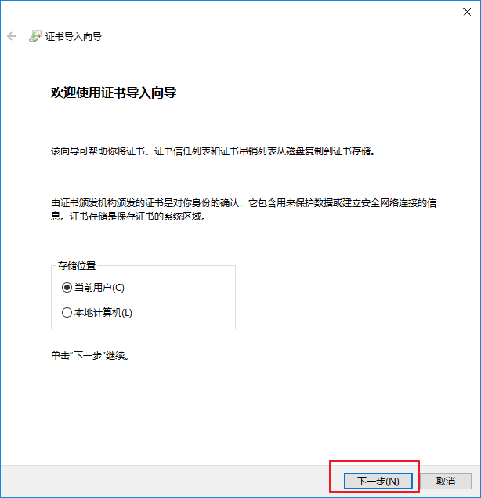
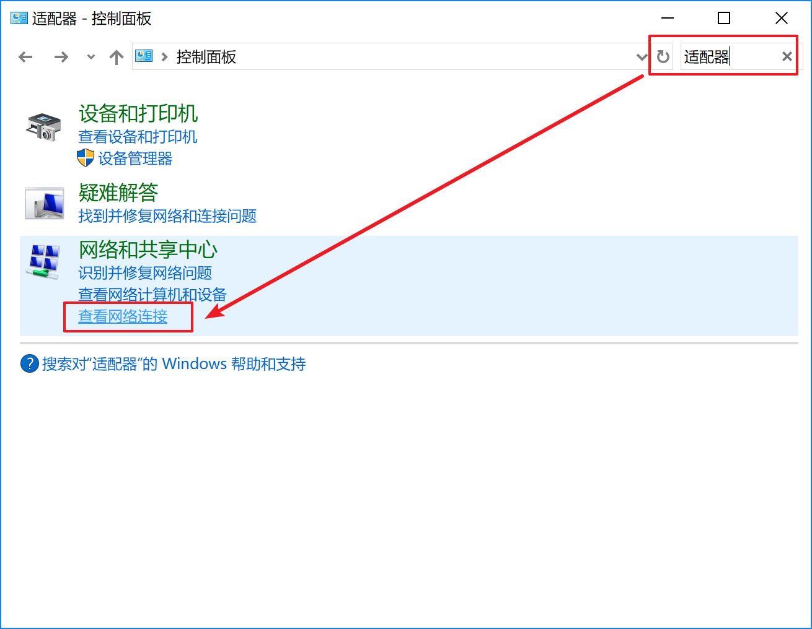

原文连接:https://www.cnblogs.com/hoxis/p/11512006.html
本文主要教你如何通过 Fiddler 来抓取手机端的数据包，包括 iOS 和 Android 端的配置和抓取。
一、Fiddler下载安装
访问 Fiddler 官网：https://www.telerik.com/download/fiddler
这里会要求填写一些东西，随便填写一些即可
下载完成后，傻瓜式安装即可
二、电脑端配置
1、https配置
Tools-->Options-->HTTPS 进入配置页面
参考下图进行配置
2、证书配置
点击上述页面的 Actions 按钮，选择第二个选项，将安全证书导出到桌面
导出后会在页面出现这么一个东东

双击它，进行证书安装
直接下一步-->下一步进行安装

安装成功后，会有提示：
3、连接配置
Tools-->Options-->Connections 进入配置页面
参考如下截图进行配置
配置完成后，重启 Fiddler
三、手机端配置
1、查看电脑网络IP地址
打开 CMD 窗口，输入 ipconfig
[liuhao.haha] ➤ ipconfig
Windows IP 配置
以太网适配器 VMware Network Adapter VMnet1:
连接特定的 DNS 后缀 . . . . . . . :
本地链接 IPv6 地址. . . . . . . . : fe80::601b:2a02:aea2:7a4b%33
IPv4 地址 . . . . . . . . . . . . : 192.168.22.1
子网掩码 . . . . . . . . . . . . : 255.255.255.0
默认网关. . . . . . . . . . . . . :
以太网适配器 VMware Network Adapter VMnet8:
连接特定的 DNS 后缀 . . . . . . . :
本地链接 IPv6 地址. . . . . . . . : fe80::b07b:19b2:6d5f:25d3%29
IPv4 地址 . . . . . . . . . . . . : 192.168.233.1
子网掩码 . . . . . . . . . . . . : 255.255.255.0
默认网关. . . . . . . . . . . . . :
无线局域网适配器 WLAN 2:
连接特定的 DNS 后缀 . . . . . . . : lan
本地链接 IPv6 地址. . . . . . . . : fe80::e1b8:429f:6251:3b44%35
IPv4 地址 . . . . . . . . . . . . : 192.168.2.238
子网掩码 . . . . . . . . . . . . : 255.255.255.0
默认网关. . . . . . . . . . . . . : 192.168.2.1如果像我这样，出现很多结果
不知道哪个才是本机电脑网络怎么办？
打开控制面板，搜索适配器：

打开查看网络链接
这里即可以看到，连接的无线的名称对应的网络是：WLAN 2
那么，本地的 IP 地址就是对应的：192.168.2.238
2、手机设置（Android）
2.1 网络代理设置
打开手机设置里的 WLAN，长按所连接的无线网络
选择修改网络
然后勾选高级选项
选择代理为手动，填入代理服务器为自己电脑 IP，端口填入刚刚设置的 8888
完成
2.2 证书下载安装
打开手机浏览器，访问 192.168.2.238:8888
正常情况下可以进入到如下页面
点击最下方的链接，下载证书
证书下载后，会弹出安装页面
安装时，名称可以随便填写
需要注意的是，这里的用途是一个下拉框
我不清楚有什么区别，我们可以在相同的页面下载两次
分别为两个用途各安装一个，名称用不同的
至此，手机端设置完毕
不同手机的操作流程可能会有所偏差
但是大同小异
3、手机设置（iOS）
3.1 网络代理设置
iOS 设备进入手机设置：无线局域网
点击已连接的无线网最右侧的符号，进入网络设置
同样的，选择手动配置代理
并输入 IP 和端口
3.2 证书下载
设置完成后，同样的打开浏览器，访问 192.168.2.238:8888
正常情况下可以进入到如下页面
点击最下方的链接，下载证书
与 Android 不同的是，iOS 这里只是下载，安装还需要再到手机设置里面进行
3.3 证书安装
设置-->通用-->描述文件与设备管理
这时就会看到下载的证书了
点击进行，根据提示进行安装即可
3.4 证书完全信任（重要）
设置-->通用-->关于本机-->证书信任设置
将 Fidder 的证书设置为完全信任
若缺少这一步设置，会导致一些 APP 无法联网
四、抓包
经过了这么多配置，终于可以开始抓包了
此时，通过手机浏览器访问百度首页
我们就可以在 Fiddler 上看到很多请求数据包了
总结
至此，打完收工。
可以看出，iOS 上的设置要比 Android 上复杂一些，也反映出 iOS 更安全一些。
本文主要是教你如何通过 Fiddler 抓取手机端的数据包。
至于数据包如何解析，或者 Fiddler 如何使用，就不是本文所要讨论的内容了。
参考
1、https://blog.csdn.net/qq_36350532/article/details/79848686
2、https://testerhome.com/topics/15200